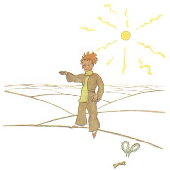
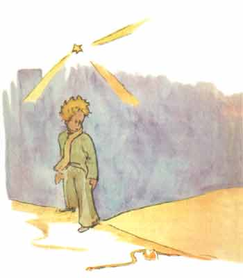

当人们想要说得俏皮些的时候，说话就可能会不大实在。在给你们讲点灯人 的时候，我就不那么忠实，很可能给不了解我们这个星球的人们造成一个错误的 概念。在地球上，人们所占的位置非常小。如果住在地球上的二十亿居民全站着， 并且象开大会一样靠得紧些，那么就可以从容地站在一个二十海里见方的广场上。 也就是说可以把整个人类集中在太平洋中一个最小的岛屿上。
当然，大人们是不会相信你们的。他们自以为要占很大地方，他们把自己看 得象猴面包树那样大得了不起。你们可以建议他们计算一下。这样会使他们很高 兴，因为他们非常喜欢数目字。可是你们无须浪费时间去做这种乏味的连篇累牍 的演算。这没有必要。你们可以完全相信我。

小王子到了地球上感到非常奇怪，他一个人也没有看到，他正担心自己跑错 了星球。这时，在沙地上有一个月光色的圆环在蠕动。

小王子毫无把握地随便说了声：“晚安。”
“晚安。”蛇说道。
“我落在什么行星上？”小王子问道。
“在地球上，在非洲。”蛇回答道。
“啊！……怎么，难道说地球上没有人吗？”
“这里是沙漠，沙漠中没有人。地球是很大的。”蛇说。
小王子坐在一块石头上，抬眼望着天空，说道：
“我捉摸这些星星闪闪发亮是否为了让每个人将来有一天都能重新找到自己 的星球。看，我那颗行星。它恰好在我们头顶上……可是，它离我们好远哟！”
“它很美。”蛇说，“你到这里来干什么呢？”
“我和一朵花闹了别扭。”小王子说。
“啊！”蛇说道。
于是他们都沉默下来。
“人在什么地方？”小王子终于又开了腔。“在沙漠上，真有点孤独……”
“到了有人的地方，也一样孤独。”蛇说。
小王子长时间地看着蛇。
“你是个奇怪的动物，细得象个手指头……。”小王子终于说道。
“但我比一个国王的手指更有威力。”蛇说道。
小王子微笑着说：
“你并不那么有威力……你连脚都没有……你甚至都不能旅行……”
“我可以把你带到很远的地方去，比一只船能去的地方还要远。”蛇说道。
蛇就盘结在小王子的脚腕子上，象一只金镯子。
“被我碰触的人，我就把他送回老家去。”蛇还说，“可是你是纯洁的，而 且是从另一个星球上来的……”
小王子什么也没有回答。
“在这个花岗石的地球上，你这么弱小，我很可怜你。如果你非常怀念你的 星球，那时我可以帮助你。我可以……”
“啊！我很明白你的意思。”小王子说，“但是你为什么说话总是象让人猜 谜语似的？”
“这些谜语我都能解开的。”蛇说。
于是他们又都沉默起来。